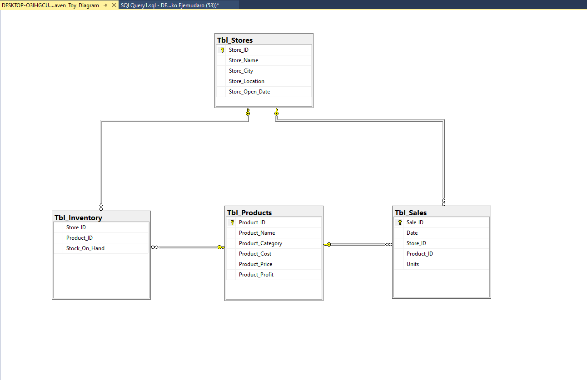
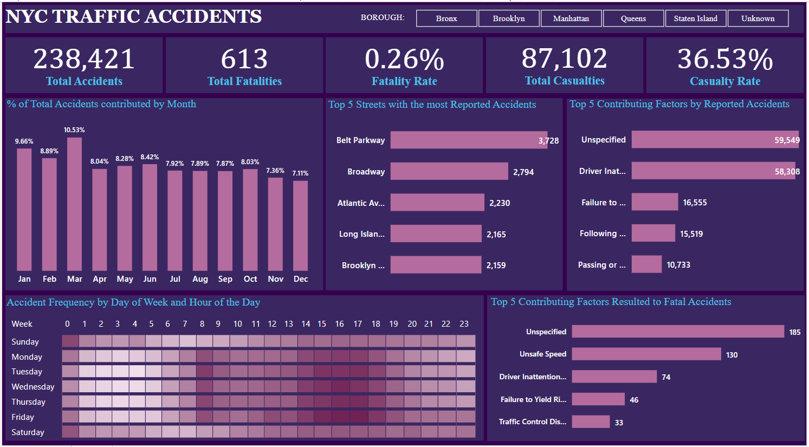
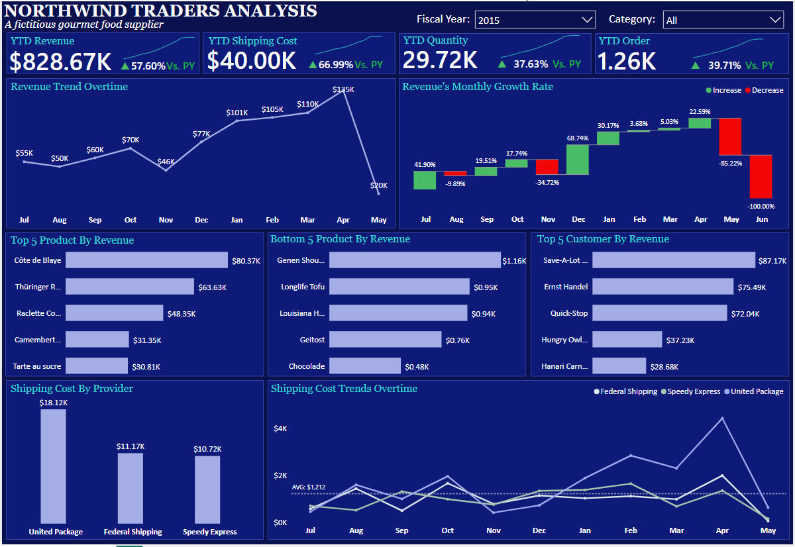
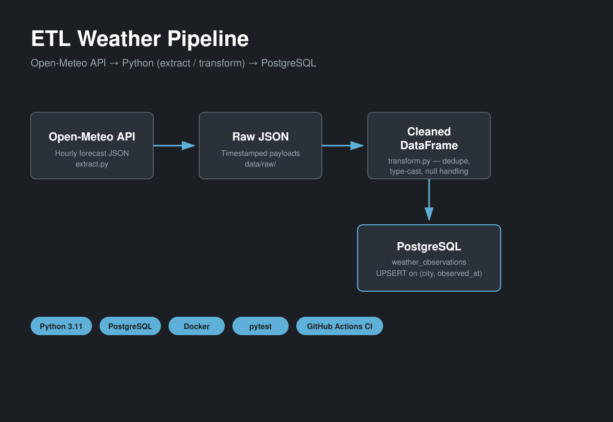

Maven Toys Sales Analysis - SQL
A SQL project that aims to provide Maven Toys, a fictional chain of toy stores in Mexico, with insights into product profitability, seasonal sales trends, stock-out impact, and inventory efficiency.

A SQL project that aims to provide Maven Toys, a fictional chain of toy stores in Mexico, with insights into product profitability, seasonal sales trends, stock-out impact, and inventory efficiency.

A SQL and Power BI project that examines New York City traffic accident data, identifying key patterns, contributing factors, and potential areas for safety improvement across the city.

A Power BI project that examines sales and order data for Northwind Traders, a gourmet food supplier, simplifying complex information to facilitate strategic decision-making.

A raw-to-warehouse ETL pipeline that pulls hourly weather data from the Open-Meteo API, cleans and validates it in Python, and loads it into PostgreSQL with upsert logic, containerized with Docker and tested with pytest.
In data analysis, I uncover meaningful insights by systematically examining and interpreting data. My approach involves employing various analytical techniques to extract valuable information that informs decision-making processes.
Data cleaning is a crucial step in my workflow. I meticulously identify and rectify errors, inconsistencies, and missing values to ensure the integrity and accuracy of the data I work with.
I bring data to life through effective visualization. Utilizing graphs, charts, and dashboards, I present complex information in a visually accessible manner, enabling stakeholders to grasp key trends and patterns effortlessly.
In data modeling, I design and implement robust models that capture the underlying structure of the data. This allows for predictive analysis and facilitates informed decision-making based on the patterns identified.
Data profiling is a fundamental part of my process. I systematically examine and summarize the characteristics of the data, identifying patterns, outliers, and potential issues to guide further analysis and decision-making.
Ensuring data accuracy is paramount. I rigorously validate data against predefined criteria to confirm its reliability, supporting the generation of trustworthy insights that stakeholders can confidently rely on.
As a data analyst, critical thinking is my guide. I meticulously evaluate data quality, question assumptions, and consider alternative perspectives, ensuring my analyses are robust and insightful.
Effective communication is paramount in my role as a data analyst. I convey complex findings clearly and concisely, tailoring my message to diverse audiences, whether technical or non-technical stakeholders.
In presentations, I strive to make complex data accessible. I focus on delivering clear, impactful messages, utilizing visuals and narratives to ensure that my audience grasps the significance of the insights.
As a team player, collaboration is ingrained in my approach. I actively engage with colleagues, share insights, and contribute to a collective understanding, fostering a collaborative environment that enhances our analytical capabilities.
Problem-solving is at the core of my role. I break down complex issues into manageable components, formulating data-driven solutions that address root causes and contribute to effective decision-making.
As a data analyst, meticulous attention to detail is my hallmark. I understand the significance of every data point and ensure precision in every analysis. From data cleaning to model implementation, I meticulously review each step to identify potential errors or inconsistencies.